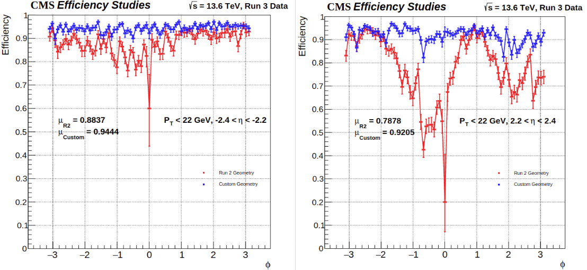

Using wave mechanics to construct directed sound beams.
Enclosed, powered, and independently controlled an array of 32 speakers. Programmed delay between speakers using 16-channel TDM to dynamically change the direction of constructive sound-beam, as dictated via Web UI or facial tracking.
Awarded 3rd place out of 20 teams in Northeastern University's ECE Capstone Symposium.
Simple Portal for Easier Data Quality Monitoring (DQM)

New Method of Cathode-Strip-Chamber Coordinate-Lookup Table Alignment
CERN CMS Endcap Muon Track Finder
Optimizing muon momentum estimation.
In Switzerland, I worked on optimizing cathode-strip coordinate lookup tables, streamlining access to CMS performance data, and porting the Endcap trigger's Boosted Decision Tree from C++ to Python.
A novel muon-ion collider has been proposed as an upgrade to the Brookhaven National Laboratory's electron-ion collider, which is scheduled to be built in the early 2030’s. We seek to simulate the muon-ion collisions in software to determine the likelihood of creating and detecting leptoquarks. These simulations could set expectations for measurements in the detectors, influence the choice of detector technology, and ultimately encourage or discourage the construction of such a collider.
Occurences of materials by band-gap and fermi-level bandwidth
Materials Miner
Using Data Science to discover and classify topological insulators.
The Materials Miner project is an effort by the Northeastern University Condensed Matter Group to discover and classify topological insulators through the use of unsupervised machine learning. Over 70,0000 materials have been extracted and analyzed according to properties such as bandstructure and chemical formula, and have been classified using spectral clustering algorithms.
Recreating an early 20th century electro-mechanical design.
Final freshman engineering project: programmed and wired a microcontroller in order to interface with an IR sensor and LED, creating a functioning video game and television display.
Coordinated instructional audio engineering workshops from conception to execution for dozens of students. Budgeted and prepared hundreds of dollars of building materials. Presented monthly lessons allowing students to assemble audio-based projects in real time both in software and hardware.
Collaborated with students to compile a Preliminary Design Report for a hypothetical lunar lander with a budget of $35 million. Researched and implemented strategies used in real-life space missions to devise power and instrumentation subsystems. Implemented mission planning methods such as Failure Mode and Effects Analyses, Risk Assessment Matrices, and Validation Plans.
Programmed embedded microcontroller in C++ to analyze audio inputs and control an RBG LED strip. Utilized FFT analysis to correlate audio frequency to color and to correlate volume to brightness.